UX / UI · Web & Mobile Project
Adopt A Mentor
Connecting new adopters with experienced pet parents - so no one has to figure it out alone.
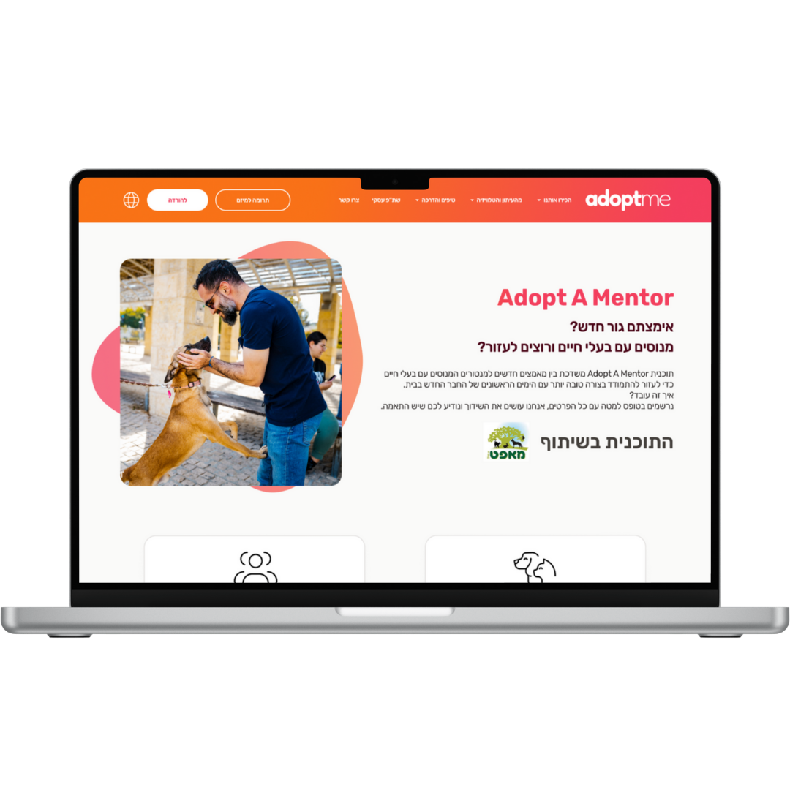
Overview
Adopting a pet for the first time is overwhelming. AdoptMe asked me to design a feature that connects new adopters with experienced mentors - so no one has to figure it out alone.
The Problem
There's no one to ask.
Many adopters experience frustration and loneliness - because when something feels off, there's simply no one to ask.
How Might We
How might we give adopters guidance, emotional support, and practical advice from experienced pet owners?
Main Goals
Give adopters a human guide - someone who's been there
User Personas
Two sides of the same connection
Two users with opposite relationships to the process - one is looking for help, one is offering it. That asymmetry shaped every design decision.
Background
Adopting a dog for the first time. Excited but afraid of making the wrong call - insecure and overwhelmed.
Main Goal
Gain confidence and understand what to expect in the first weeks.
Pain Points
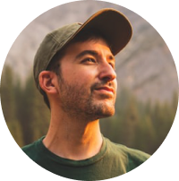
Background
Has adopted several dogs over the years. Wants to help new adopters avoid common mistakes.
Main Goal
Make a meaningful impact by sharing his experience in a supportive, structured way.
Pain Points
Version 01
Location-based auto-matching & web registration
A web form for each user type. The system matches automatically by location alone - no profiles, no browsing, no choice.
V1 - How it worked
The brief, executed simply
Following the company's brief, I designed a straightforward registration flow - a form for each user type, with the system automatically matching adopters to mentors based on location only. The mentor would then review the request and approve or decline it.

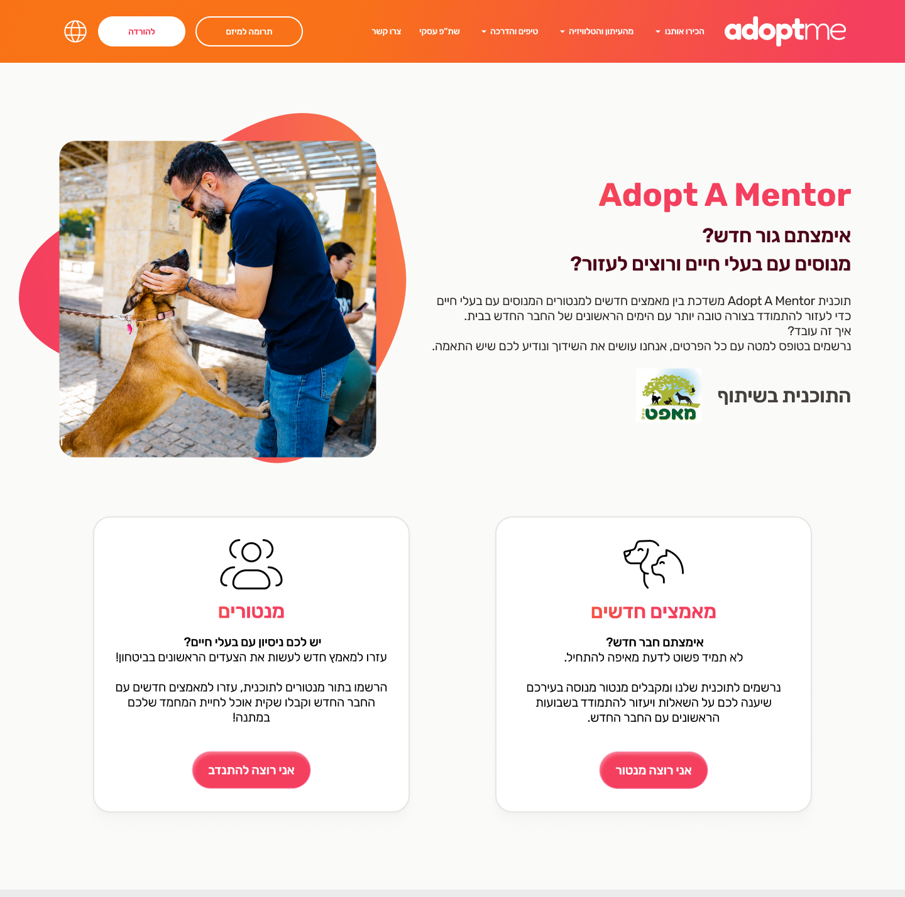
User selection flow that directs mentors and adopters through the relevant registration process.
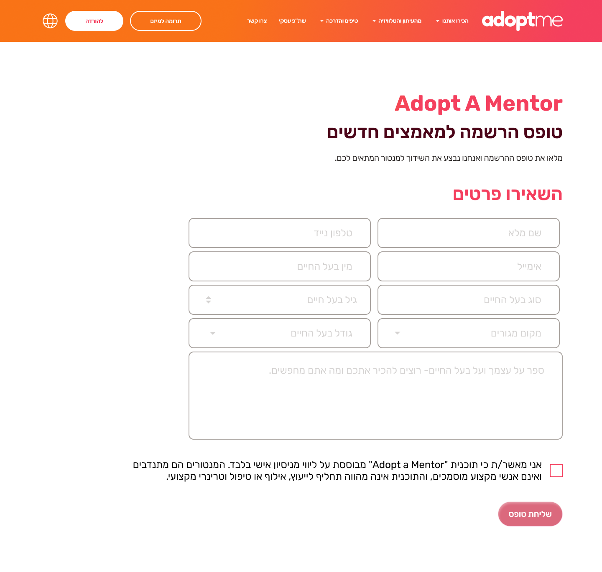
Form collects key pet details - type, age, size - to understand the adopter's situation.
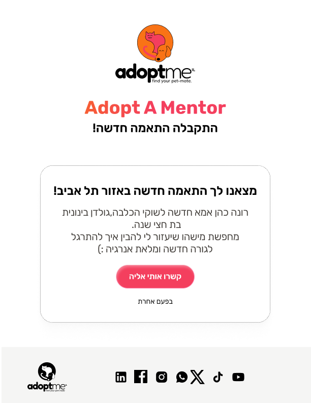
Mentor receives adopter's profile and can accept the match - then receives their WhatsApp contact.
Design Reflection
What V1 taught me
Key Insight
Long web forms create friction - but the bigger problem was the matching logic. Location alone can't determine a good mentor relationship. It ignores availability, experience, breed, and personality - everything that actually matters.
The redesign focused on two things: making registration feel effortless, and replacing the algorithm with a community pool - so both sides get to choose.
Version 02
Mobile-first, visual registration & a mentor pool to choose from
A complete rethink - mobile app, visual onboarding, and a community feed that replaces the algorithm. Users browse real mentor profiles and both sides choose the connection.
Design Decisions
Every change, explained
Reducing open text fields
Open text fields were kept only where free input is truly necessary - everything else was replaced with visual tiles and selectors. Less typing, fewer drop-offs, same information collected.
From form to guided flow
Registration was rebuilt as a visual, choice-based experience - selection tiles and guided steps replace open text fields. Users tap through focused choices instead of filling a form, making it easier to complete while still collecting everything we need.
One step at a time, not one long form
The registration was split into focused steps - each screen asks for one thing at a time. Users never see the full length upfront, which reduces overwhelm and keeps them moving forward. Smaller steps feel easier to complete, and easier to come back to.
Key Screens
The full V2 flow
Each step is a separate screen - keeps users focused and reduces drop-off at every stage of the registration journey.
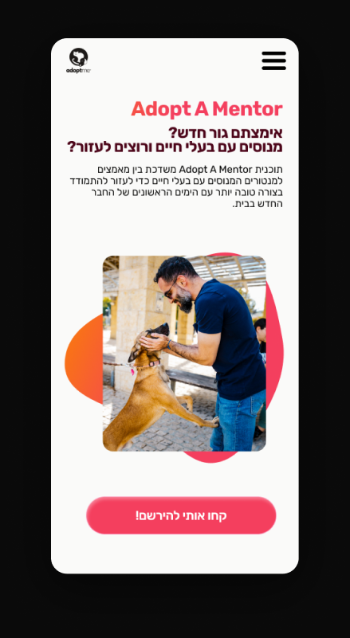
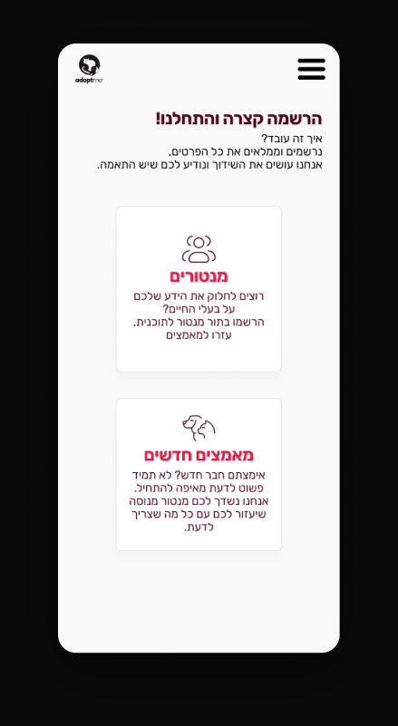
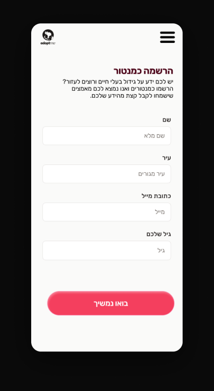
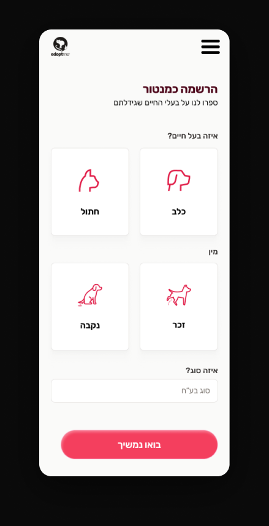
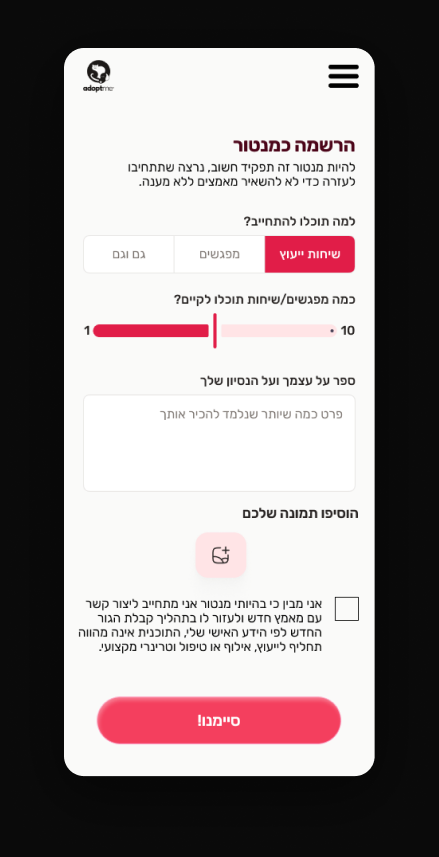
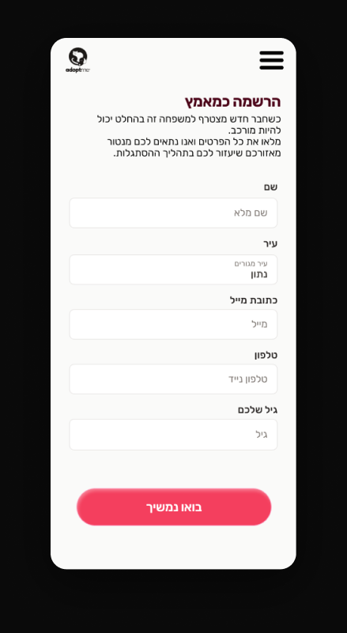
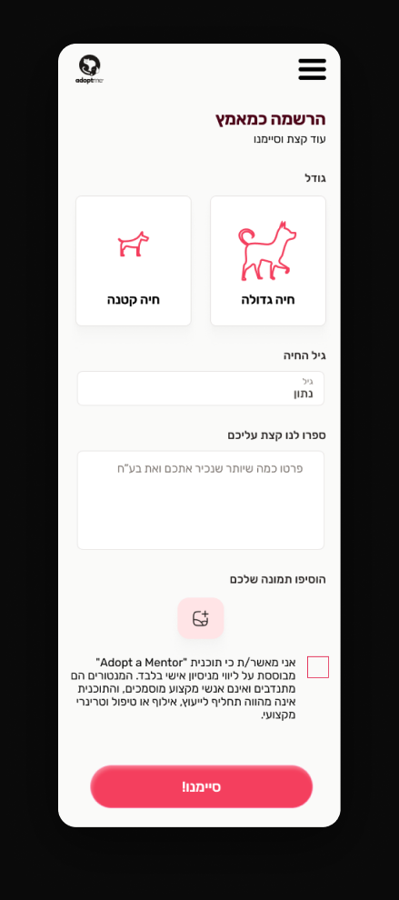
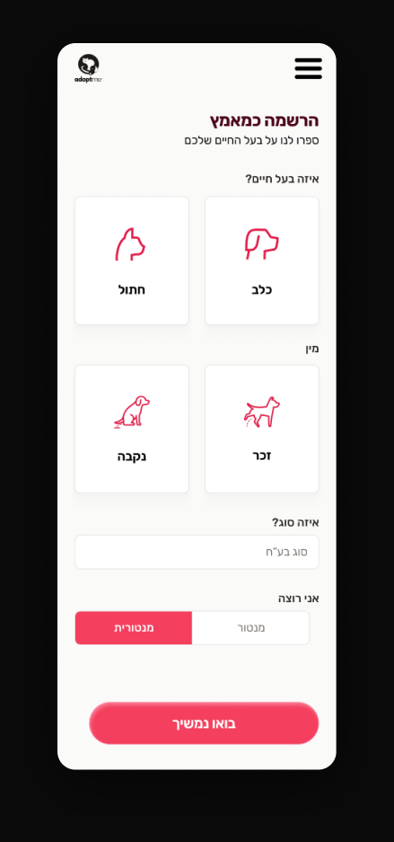
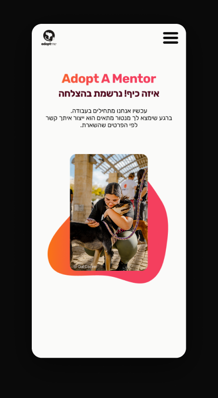
Reflection
I started with the interface. The problem was deeper.
At first, I focused mostly on the interface itself - improving the layout, simplifying the registration flow, and making the experience feel cleaner and more organized.
But over time, I realized the bigger challenge wasn't only the UI. Today, people lose patience quickly with long and exhausting forms - especially in emotional or personal processes like this one.
That realization pushed me to rethink the registration experience entirely - making it feel lighter, more human, and less overwhelming.